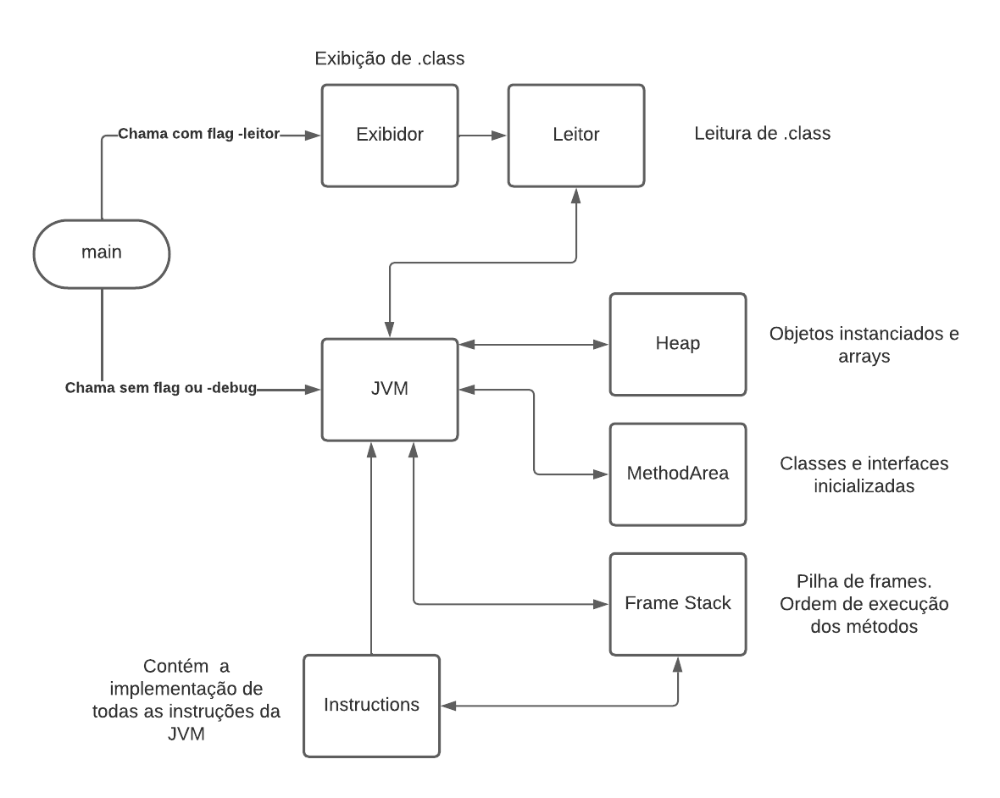

|
JVM - Software básico
JMV simplificada implementada em C++ para a disciplina de Software Básico
|
Rodar o comando make para compilar o projeto
(sem flags)

Se comunica com os outros módulos e gerencia a execução do programa.
Contém as estruturas de dados e funções comuns a quase todos os módulos.
Contém funções e estruturas de dados que permitem a leitura de arquivos .class e salvamento de suas informações.
Contém funções e estruturas de dados que permitem executar os métodos na ordem correta, gerenciando a pilha de frames.
Armazena os objetos e arrays instanciados da JVM, gerenciando o acesso e a alteração dos mesmos.
Armazena e permite interação com as classes e interfaces carregadas na JVM.
Contém as funções e estruturas de dados que permitem a exibição das informações contidas no .class.
Contêm a implementação das instruções da JVM.